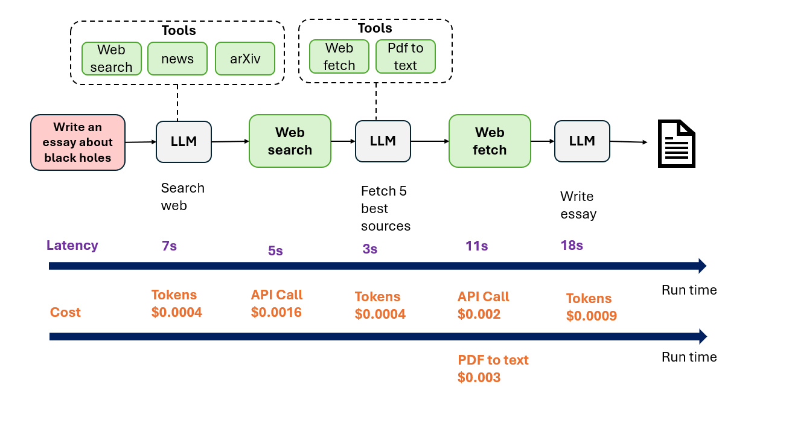

Module 4 — Episode 6
Training:Agentic AI Training
🎯 Learning Objectives
By the end of this episode, you will be able to:
- ✅ Benchmark and measure latency across multi-step agentic workflows
- ✅ Identify cost hotspots by analyzing per-component resource consumption
- ✅ Apply practical strategies to reduce latency and cost without degrading output quality
🧭 Overview
This episode explores how to measure and optimize latency and cost in agentic AI workflows.
While output quality should take priority during early development, performance tuning becomes critical as systems scale and user demand grows.
You’ll learn how to benchmark workflow components, analyze timing and cost breakdowns, and choose targeted optimizations that deliver meaningful improvements.
🧱 Prerequisites
Readers should already understand:
- Agentic workflow design and orchestration
- Basic LLM API usage and token-based pricing models
- Concepts from previous episodes on workflow evaluation and debugging
🔑 Core Concepts
- Latency Profiling – Measuring time taken by each workflow step to identify slow components.
- Cost Benchmarking – Quantifying per-step and per-token cost to locate expensive operations.
- Parallelism – Executing independent steps concurrently to reduce total runtime.
- Model Substitution – Using smaller or faster LLMs for non-critical tasks to save time and cost.
🖼 Visual Explanation
 Caption:This timeline visualization shows step durations and costs across a workflow, highlighting parallelizable steps and identifying optimization targets for latency and cost reduction.
⚙️ Technical Breakdown
How It Works
1. Measure Step Timing:- Record start and end times for each workflow component (e.g., LLM query, web search, data parsing).
- Aggregate results over multiple runs to get average durations.
2. Analyze Latency Distribution:- Identify high-latency steps that dominate total runtime.
- Determine whether steps can be parallelized or replaced with faster alternatives.
3. Measure Cost per Step:- Calculate cost based on tokens used (input + output) and API call fees.
- Sum costs across steps to determine total workflow expense.
4. Prioritize Optimization:- Focus on the most time- or cost-intensive steps first.
- Experiment with smaller LLMs or alternative providers to compare trade-offs.
Why It Works
Benchmarking provides quantitative visibility into workflow performance.
By measuring latency and cost per component, teams can make data-driven decisions rather than guessing which optimizations matter.
This prevents wasted effort on micro-optimizations that don’t meaningfully improve user experience or operating costs.
When To Use It
✅ Ideal Scenarios- When workflows are stable and producing high-quality results
- When scaling to large user bases where cost or latency becomes noticeable
- When comparing LLM providers or infrastructure configurations
- During early prototyping when correctness and quality are still evolving
- When optimization effort outweighs expected performance gains
Trade-offs & Limitations
- Measurement Overhead: Profiling introduces minor runtime costs.
- Complexity: Adding timing and cost instrumentation increases code complexity.
- Model Trade-offs: Smaller or faster models may reduce quality; validation is required.
- Parallelization Limits: Some steps may be inherently sequential or dependent.
Performance Considerations
- Bottlenecks: Identify serial steps that dominate runtime; apply concurrency where safe.
- Optimization Strategies:
- Use asynchronous I/O for network-bound tasks (e.g., web fetches).
- Cache repeated API calls or intermediate results.
- Use cost-effective LLMs for simple subtasks.
- Resource Efficiency: Monitor token usage and API call frequency to prevent cost spikes.
💻 Code Examples
Minimal Example (Python Pseudocode)
import time
from my_agentic_workflow import run_step
steps = ["generate_search_terms", "web_search", "summarize", "write_essay"]
timings = {}
costs = {}
for step in steps:
start = time.time()
result, step_cost = run_step(step)
end = time.time()
timings[step] = end - start
costs[step] = step_cost
# Identify bottlenecks
sorted_by_time = sorted(timings.items(), key=lambda x: x[1], reverse=True)
sorted_by_cost = sorted(costs.items(), key=lambda x: x[1], reverse=True)
print("Latency Breakdown:", sorted_by_time)
print("Cost Breakdown:", sorted_by_cost)
This example measures execution time and cost per step, helping identify which components to optimize.
🧩 Key Takeaways
- Prioritize output quality before optimizing latency or cost.
- Use benchmarking to find bottlenecks rather than guessing.
- Apply parallelism, model substitution, and provider switching strategically.
- Focus optimization on steps that materially affect user experience or operational cost.
> Next: Proceed to the final episode of this module to wrap up and consolidate your learnings.